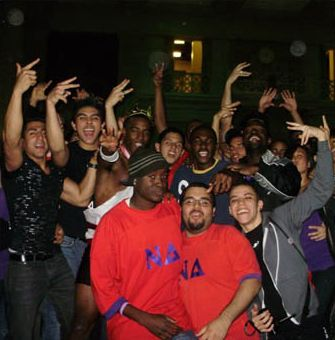

Nu Delta Fraternity
"Trust. Respect. Brotherhood. These three ideals form the basis of Nu Delta Fraternity - our community and home at MIT. We pride ourselves in the many facets of our group: a strong academic support network, a lively social scene, and the lasting bonds of brotherhood that have kept us remarkably close-knit throughout the years. Joining Nu Delta has been a distinct pleasure for me in my time here, and I am confident that my Brothers feel likewise."
We are located at 460 Beacon Street in Boston's Back Bay.
If you have any questions or would like a tour, feel free to stop by or contact us.
Chuky Mbagwu
Nu Delta President
Class of 2011
